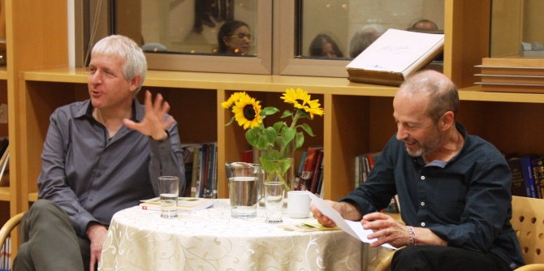

The Mandel Center for Leadership in the Negev hosted an event to mark the publication of Professor Adi Wolfsohn's new collection of eco-poetry. The volume contains poems in three languages – Hebrew, Arabic, and English – which emphasizes the fact that the struggle to protect the environment takes place in a shared space where there are multiple languages and cultures.
Held on February 27, 2018, the book launch was an opportunity to draw inspiration and to openly discuss issues related to society, place, and environment in the context of the Negev. At the beginning of the event, faculty member Dr. Itzhak (Kiki) Aharonovich introduced Professor Wolfsohn and read aloud several of the poems in the book. One of the Arabic poems in the book was read by Salah Abu Jafar, a graduate of the first cohort of the Mandel Program for Local Leadership in Rahat.
The poems proved fertile ground for a discussion of the ecological-environmental situation in Israel, with a particular focus on the Negev. The discussion touched on the gap between the situation at present and future plans to improve ecology in Israel and the region. It also explored the level of public awareness (or lack thereof) regarding the power of ordinary citizens and Israel's Ministry of Environmental Protection to act on these issues.
Professor Wolfsohn highlighted the inherent power of culture, and its importance for the ecological struggle, stressing that what is needed is a shared culture of environmental issues that includes public discourse, active leadership, and efforts to change people’s habits. He referred to the term “the common good,” which denotes complex thinking beyond one’s own needs and desires in the here and now, and a comprehensive perspective that supports joint action to create change for the good of the entire group. Professor Wolfsohn concluded by saying that he believes in the power of leadership to create widespread change on ecological issues, and stressed that anyone can make a real difference if he or she simply decides to do so.
At the end of the event, Dr. Aharonovich spoke about Wolfsohn’s writings and noted the power of words to influence behavior and drive people to action. He pointed out that the discussion about “the common good” had raised the social distinctions that people make regarding the “boundaries of their homes” – what a person see as his or her home and its borders. He also spoke about the title of the book, Oikos, pointing out that this Greek word refers to the concept of home in its broadest sense, referring to the territory the home represents and the resources it contains.

{kind=link}